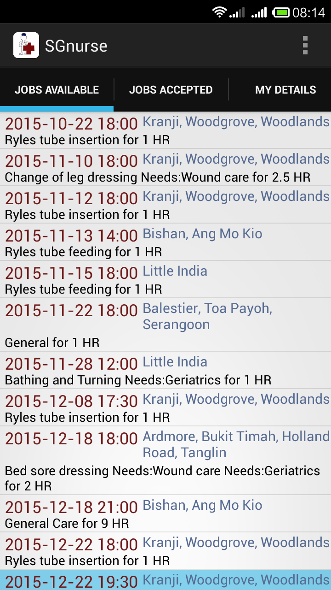
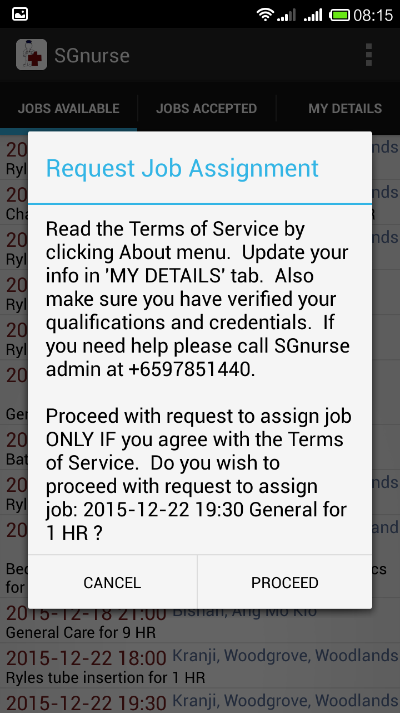

How it Works
SGnurse is a platform where Singapore based nurses who are capable and interested in providing part time and short term home nursing services are linked via a mobile phone app.
A potential customer or his/her family member can request for home nursing services by submitting details such as name, address, contact numbers etc., as well as what services, for how many hours, and when they need the visit. These details can be submitted on this website or by simply calling SGnurse admin at 97851440.
The customer request, once confirmed, will then appear in the mobile phone app of the registered Singapore based nurses. Initially only certain information, such as the date/time of visit, the nursing services required, and the broad postal district of the customer, will be shown in the app.

When a registered nurse is able to and interested in providing the service, he/she will request through the mobile app.

SGnurse admin will then do a match between the customer requirements and the qualification/experience/customer feedback of the nurse(s) to recommend a particular nurse. Only then will the full details such as the name, telephone number and address of the customer be disclosed to the selected nurse, who will then pay the visit at the appointment date/time to provide the services.